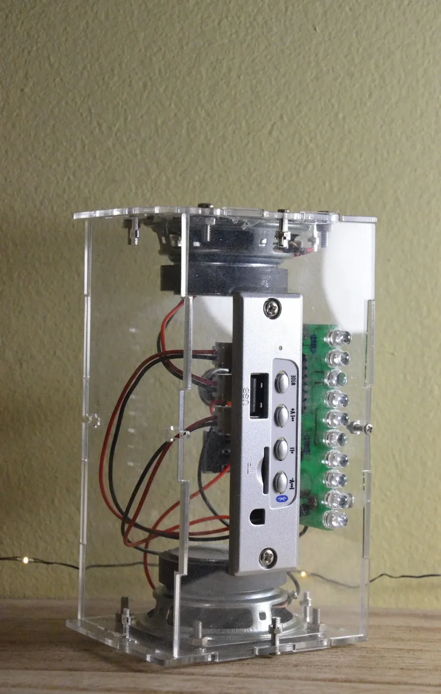
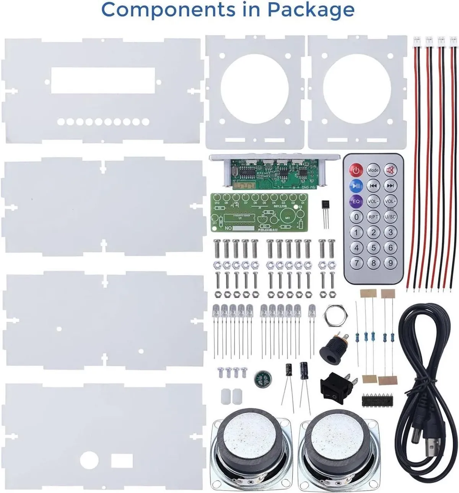
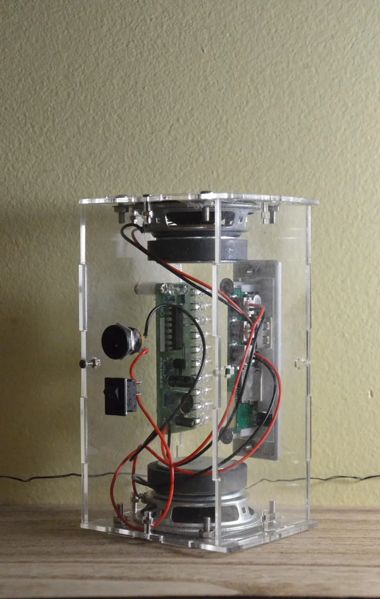

Personal project · Kit build
A speaker, piece by piece.
Building a DIY Bluetooth speaker kit introduced me to circuitry, soldering, and the patience needed to turn a collection of small parts into a working device.
- Project format
- DIY Bluetooth speaker kit
- My role
- Component & enclosure assembly
- Focus
- Electronics · Soldering · Testing

A first step into circuitry
I chose a Bluetooth speaker kit to learn how electronic components come together in a useful product. The kit provided the circuit design, parts, and instructions; my work focused on understanding the components and assembling and testing the speaker.
Working through the details
At first, the number of small parts felt overwhelming. I slowed down, followed the instructions carefully, and learned to identify components such as resistors, capacitors, diodes, and LEDs.
The build involved placing components, soldering the board, assembling the enclosure, and testing the completed speaker. Breaking the work into smaller steps helped me stay organized through the assembly.
What I learned
This project helped me become more comfortable with soldering and component identification. It also reinforced how patience and attention to placement matter when working with small electronic parts.
Completing the kit gave me a practical introduction to electronics and the satisfaction of seeing a working device emerge from individual components.


The original project archive includes the kit instructions and a video. Explore the original project ↗